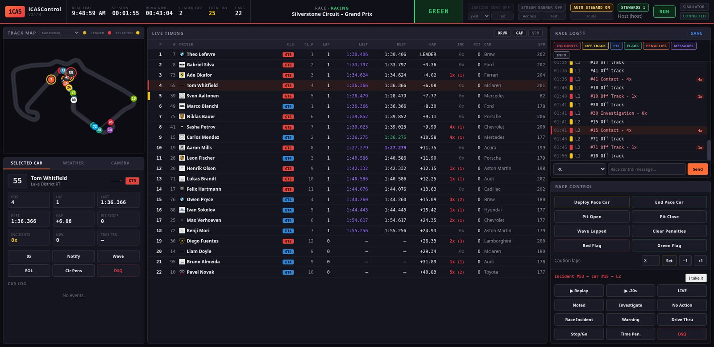
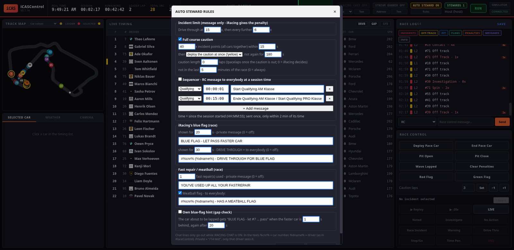
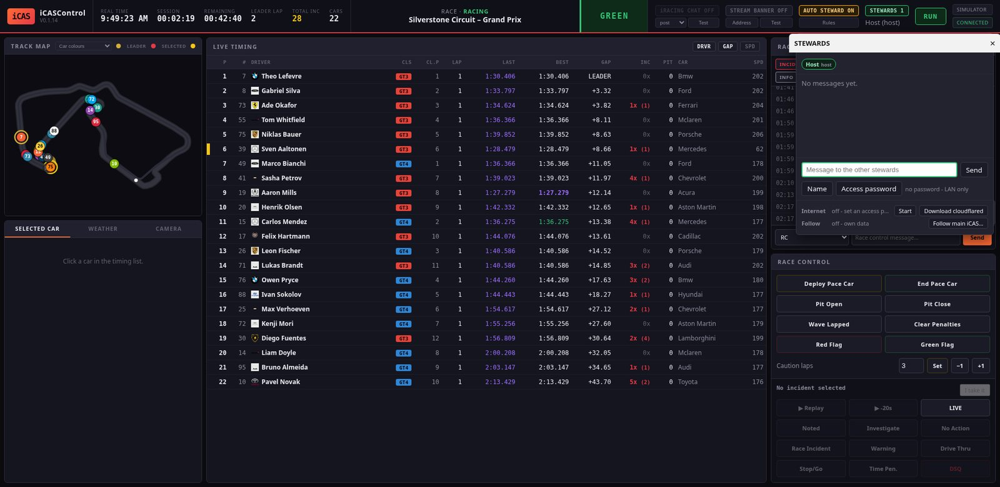

iCASControl ist unser eigenes Rennleitungs- und Steward-Programm für iRacing-Ligen, nach dem Vorbild von iRaceControl. Es zeigt Live-Timing, eine Streckenkarte und ein Rennlog mit allen Vorfällen. Es schickt Strafen und Rennleitungs-Befehle direkt in den iRacing-Chat und ruft mit dem Auto Steward selbstständig Cautions aus. Mehrere Stewards können gleichzeitig arbeiten, auch übers Internet.
iCASControl ist Teil der iRacing-Overlay-App. Es wird mit ihr installiert und aktualisiert und im selben Launcher gestartet.

Inhalt
- Voraussetzungen
- Installation der iRacing-Overlay-App
- iCASControl starten
- Updates
- Die Oberfläche
- Vorfälle und Entscheidungen
- Replay
- Befehle in den iRacing-Chat
- Rennleitung: Pace Car, Boxengasse, Caution-Runden
- Auto Steward und Sequencer
- Entscheidungen im Stream (Banner und Tower)
- Mehrere Stewards
- Speichern und Neustart während des Rennens
- Fehlerbehebung
- Wo die Einstellungen liegen
1. Voraussetzungen
- Windows-PC mit iRacing. iCASControl liest die Daten direkt aus dem laufenden iRacing. Ohne iRacing läuft ein eingebauter Simulator (zum Üben).
- Der iRacing-Account auf diesem PC muss Admin der Session sein, wenn du:
- die offiziellen Incident-Punkte (1x / 2x / 4x) aller Fahrer live sehen willst (als Zuschauer schickt iRacing sie erst am Rennende),
- Strafen und Befehle in den iRacing-Chat schicken willst.
- Deshalb läuft der Haupt-iCAS auf dem Rechner des Admins, nicht unbedingt auf dem Stream-PC.
- In iRacing unter Optionen → Grafik die Einstellung Max Cars auf 63 stellen, damit iRacing Daten für das ganze Feld liefert.
- iRacing und iCASControl entweder beide ohne oder beide mit Administratorrechten starten (normal: beide ohne).
- Internet nur für die Installation, für Updates und für Stewards außerhalb deines Heimnetzes.
2. Installation der iRacing-Overlay-App
Die Installation richtet Python, alle Pakete und eine Verknüpfung ein. Sie wird einmal gemacht; danach kommen Updates per Knopfdruck.
Variante A – mit ZIP-Datei
- Die ZIP-Datei laden: https://github.com/halvar20000/iracing-overlays/archive/refs/heads/main.zip
- Entpacken (Rechtsklick → Alle extrahieren).
- Im entpackten Ordner
install.batdoppelklicken.
Variante B – ohne ZIP
PowerShell öffnen (Startmenü → „PowerShell“) und diese Zeile einfügen:
powershell -ExecutionPolicy Bypass -c "irm https://raw.githubusercontent.com/halvar20000/iracing-overlays/main/install.ps1 | iex"Was der Installer macht
- Er sucht Python 3.10 oder neuer. Fehlt es, installiert er Python 3.12 über
winget(Windows fragt eventuell nach einer Bestätigung). - Er fragt nach dem Installationsordner. Der Vorschlag
C:\Users\<du>\iRacing-Overlayspasst. - Er lädt die aktuelle Version von GitHub und installiert die Python-Pakete. Das dauert beim ersten Mal ein paar Minuten.
- Er legt die Verknüpfung „iRacing Overlays“ auf dem Desktop und im Startmenü an.
install.bat kann jederzeit erneut laufen (Reparatur). Deine Einstellungen bleiben dabei erhalten.
3. iCASControl starten
- „iRacing Overlays“ auf dem Desktop doppelklicken. Der Launcher öffnet sich mit einer Zeile pro Overlay.
- In der Zeile „Race Control (iCAS)“ auf Start klicken. Der Punkt wird grün.
- Auf Open klicken oder im Browser http://localhost:8080 öffnen.
Tipps:
- iRacing darf vor oder nach iCASControl gestartet werden. Läuft iRacing nicht, zeigt iCASControl den Simulator (Silverstone, GT3 + GT4). Sobald iRacing eine Session geladen hat, schaltet es innerhalb weniger Sekunden auf die echten Daten um. Oben rechts steht dann IRACING statt SIMULATOR.
- Für den Simulator braucht man kein iRacing. Ideal, um alles in Ruhe auszuprobieren. Befehle werden im Simulator nur ins Log geschrieben, nie gesendet.
- Die Version steht oben links unter dem Logo (z. B.
V0.1.14).
4. Updates
Der Launcher prüft beim Start, ob es etwas Neues gibt. Dann erscheint oben ein grüner Balken mit den Änderungen und dem Knopf „Update & restart“:
- Klicken. Laufende Programme werden gestoppt, die neuen Dateien geladen und alles neu gestartet.
- Die iCASControl-Seite im Browser einmal neu laden (F5).
Einstellungen, Passwort und gespeicherte Rennen (Ordner racecontrol/data/) werden bei Updates nie überschrieben.
Nicht mitten im Rennen updaten, sondern davor oder danach.
5. Die Oberfläche
Kopfzeile (von links nach rechts)
| Element | Bedeutung |
|---|---|
| Uhrzeiten | Echtzeit, Session-Zeit, Restzeit, Runde des Führenden |
| TOTAL INC | Summe aller offiziellen Incident-Punkte. Ein gelber * heißt, es kamen noch keine offiziellen Punkte (Admin?). |
| Session / Strecke | Session-Typ und -Status, Streckenname |
| Flaggenfeld | GREEN, CAUTION, ONE TO GREEN, … (Tooltip: die rohen Flaggen-Bits) |
| iRACING CHAT | Schalter: Befehle wirklich in den iRacing-Chat schicken (siehe Kapitel 8) |
| STREAM BANNER | Schalter: Entscheidungen ins Stream-Banner schicken (Kapitel 11) |
| AUTO STEWARD | Schalter + Rules (Kapitel 10) |
| STEWARDS | Wer online ist, Steward-Chat, Passwort, Internet, Folgemodus (Kapitel 12) |
| RUN / STOP | STOP hält die Datenerfassung an, z. B. zum Nachschauen |
| Quelle | SIMULATOR / IRACING / REPLAY und Verbindungsstatus |
Hauptbereich
- Streckenkarte (links oben): jedes Auto als nummerierter Punkt. Farben über die Auswahl im Kopf der Karte: Autofarbe, Klasse, Lizenz, relativ zum ausgewählten Auto, Runden-Rückstand. Goldener Ring = Führender, roter Ring = ausgewähltes Auto, gelb = neben der Strecke.
- Selected Car / Weather / Camera (links unten): Details zum ausgewählten Auto mit Knöpfen (0x, Notify, Wave, EOL, Clr Pens, DSQ), Wetter, Kamera-Steuerung.
- Live Timing (Mitte): Position, Klasse, Runde, Sektorzeiten, letzte und beste Runde (lila = Bestzeit der Session, grün = persönliche Bestzeit), Abstand, Incidents, Boxenstopps, Fahrzeug, Geschwindigkeit.
- Klick auf eine Zeile wählt das Auto aus.
- Doppelklick setzt die iRacing-Kamera auf das Auto.
- Rechtsklick öffnet das Steward-Menü (Kapitel 6).
- Race Log (rechts oben): alle Ereignisse mit Filtern (Incidents, Off-Track, Pit, Flags, Penalties, Messages, Info). Darunter die Eingabe für Rennleitungs-Nachrichten.
- Race Control (rechts unten): Pace Car, Boxengasse, Caution-Runden und die Entscheidungs-Knöpfe für den ausgewählten Vorfall.
6. Vorfälle und Entscheidungen
Woher die Vorfälle kommen
- Offizielle Punkte: iRacings eigene 1x / 2x / 4x pro Auto. Live nur für einen Admin der Session.
- Erkannte Vorfälle (Badge DET): Dreher, Kontakte (mit Nummer des anderen Autos) und stehende Autos, erkannt an der Fahrzeugbewegung. Das funktioniert auch ohne Admin.
Kommen innerhalb von 20 s offizielle Punkte für dasselbe Auto, landen sie auf derselben Zeile, z. B. Contact with #14 - 4x (total 8x).
In der Spalte INC bedeutet ein rotes 0x (1): ein erkannter Vorfall wartet noch auf eine Entscheidung.
Entscheiden
- Im Race Log die Zeile anklicken. Unten rechts erscheint „Incident #… – car #…“.
- Optional I take it klicken, damit die anderen Stewards sehen, dass du dich darum kümmerst (bei ihnen steht „👀 dein Name“, Release gibt den Vorfall wieder frei).
- Eine Entscheidung wählen:
- Noted – zur Kenntnis genommen
- Investigate – wird untersucht (im Stream: blaues INVESTIGATION)
- No Action / Race Incident – keine Strafe
- Warning – Verwarnung
- Drive Thru / Stop/Go / Time Pen. / DSQ – Strafen Bei Strafen fragt ein Fenster nach dem Grund: frei eingeben oder eine Vorlage wählen (Track Limits, Forcing another driver off the track, Causing a collision). Bei Zeitstrafen kommt zusätzlich die Zahl der Sekunden.
Jede Entscheidung steht im Log mit dem Namen des Stewards (· Thomas).
Steward-Menü per Rechtsklick (wie in iRaceControl)
Rechtsklick auf einen Fahrer im Timing:
- Show car info
- Penalties ▸ Clear, Time Penalty, Drive through, Stop and Go, DQ
- Pacing ▸ End of line, Wave around (nur unter Caution)
- Notify – private Nachricht an diesen Fahrer
- Add admin / Remove admin, Enable chat / Disable chat, Remove
7. Replay
- Im Race Log eine Zeile anklicken (Vorfall oder irgendein Ereignis). Ohne ausgewählte Zeile bleiben die Replay-Knöpfe grau.
- ▶ Replay springt 8 s vor das Ereignis, ▶ -20s springt 20 s davor. Ein Doppelklick auf die Zeile macht dasselbe wie ▶ Replay.
- iRacing springt hin, setzt die Kamera auf das Auto und spielt in Echtzeit ab. Oben erscheint ein violetter REPLAY-Balken.
- LIVE (oder Klick auf den REPLAY-Balken) springt zurück ins Live-Bild.
Während iRacing ein Replay zeigt, schreibt iCASControl nichts ins Log. Uhren und Timing bleiben auf dem Live-Rennen.
Klappt ein Sprung nicht, steht im Log „Replay jump did not land …“ mit der Zeit, die iRacing gerade zeigt. Meist ist das Replay so weit zurück nicht mehr gespeichert.
8. Befehle in den iRacing-Chat
Damit Strafen und Rennleitungs-Befehle wirklich in iRacing ankommen:
- Der iRacing-Account auf diesem PC ist Admin der Session.
- In der Kopfzeile iRACING CHAT einschalten (ist anfangs aus).
- Methode post lassen (Standard, schreibt im Hintergrund). Nur wenn das nicht geht, focus wählen; dann kommt iRacing kurz in den Vordergrund.
- Test schickt
/rc iCASControl chat test. Das sehen nur die Admins.
Was wohin geht:
| In iCASControl | Im iRacing-Chat |
|---|---|
| Deploy Pace Car / End Pace Car | !yellow / !pacelaps 1 |
| Pit Open / Pit Close / Clear Penalties | !pitopen / !pitclose / !clearall |
| Drive Thru / Stop/Go / DSQ | !black #14 D / !black #14 / !dq #14 + Grund an alle |
| Warning | /all #14 Fahrer: WARNING |
| Wave / EOL / Clr Pens | !waveby #14 / !eol #14 / !clear #14 |
| Notify, private Nachricht | /14 Text (nur dieser Fahrer sieht es) |
| RC-Nachricht | /all Text |
| Red Flag, Green Flag, Wave Lapped, Time Penalty | gibt es in iRacing nicht – nur Log bzw. Ansage |
Nach Black Flag, DQ, EOL, Wave-by, Clear oder Caution prüft iCASControl 6 s lang, ob iRacing den Befehl umgesetzt hat. Im Log steht dann „iRacing confirmed“ oder „did NOT confirm“. Bei „did NOT confirm“: Admin? Chat-Methode?
Hinweis: EOL und Wave-around nimmt iRacing nur unter einer Caution an.
9. Rennleitung: Pace Car, Boxengasse, Caution-Runden
- Deploy Pace Car ruft eine Full Course Caution aus, End Pace Car beendet sie nach der nächsten Runde.
- Caution laps: Zahl eingeben und Set, oder −1 / +1. Das stellt die Länge der laufenden Caution ein (
!pacelaps). Geht nur unter Caution. - Pit Open / Pit Close, Clear Penalties (alle Strafen löschen).
- Das Flaggenfeld zeigt CAUTION, dann ONE TO GREEN und wieder GREEN. Im Log stehen „ONE TO GREEN – restart next lap“ und „GREEN flag – caution over“.
- Unten im Race Log: Nachricht an alle (RC) oder privat an ein Auto schicken.
10. Auto Steward und Sequencer
Schalter AUTO STEWARD in der Kopfzeile (an = aktiv), die Werte unter Rules. Der Auto Steward arbeitet nur live, nie im Replay. Chat-Nachrichten gehen nur raus, wenn iRACING CHAT an ist.

| Regel | Was passiert | WCT-Werte |
|---|---|---|
| Incident-Limit | Bei 15x eine gelbe Log-Zeile + Hinweis „drive through due“, danach alle weiteren 6x. Nur eine Meldung, die Strafe gibt iRacing selbst (Liga-Einstellung). | 15 / 6 |
| Full Course Caution | Erreichen die offiziellen Incident-Punkte aller Autos zusammen Nx innerhalb von S Sekunden, wird sofort !yellow gesendet (oder nur gefragt: Knopf DEPLOY CAUTION). Danach eine Sperrzeit. Nicht in den letzten M Minuten des Rennens. | 40x / 15 s, nicht in den letzten 5 min |
| Caution length | Runden hinter dem Pace Car, 0 = iRacing entscheidet | 0 |
| Blaue Flagge | Zeigt iRacing einem Auto 20 s lang die blaue Flagge: private Nachricht „BLUE FLAG - LET PASS FASTER CAR“. Nach 30 s: Drive Through + Nachricht an alle. | 20 s / 30 s |
| Fast Repair | Fast Repairs aufgebraucht: private Nachricht | 1 |
| Meatball | Meatball-Flagge: Nachricht an alle | an |
| Eigener Blue-Flag-Hinweis | Alte Variante nach Abstand. Standard aus. | aus |
In den Texten werden %cnr% (Startnummer) und %dname% (Fahrername) ersetzt, wie in iRaceControl.
Wichtig: Wer iCASControl schon vor dem 27.10.2026 benutzt hat, hat alte Werte gespeichert (z. B. 10x / 10 s). Einmal Rules öffnen, die WCT-Werte eintragen und Save.
Sequencer
Zeitgesteuerte Nachrichten an alle (/all), pro Session-Typ (Qualifying, Race, Practice, Warmup, Any). Standard (für die WCT):
| Session | Zeit | Text |
|---|---|---|
| Qualifying | 00:00:01 | Start Qualifying AM Klasse |
| Qualifying | 00:15:00 | Ende Qualifying AM Klasse / Start Qualifying PRO Klasse |
- Häkchen Sequencer setzen (ist anfangs aus, weil iCASControl auch für andere Ligen läuft).
- + Add message fügt eine Zeile hinzu, × löscht sie.
- Jede Nachricht geht einmal raus, und nur innerhalb von 2 Minuten nach ihrer Zeit. Wird iCASControl später gestartet, kommen keine alten Nachrichten.
11. Entscheidungen im Stream (Banner und Tower)
Entscheidungen können automatisch im Stream erscheinen: im Race-Control-Banner (Overlay rc_banner, Port 5019) und als Kürzel im Standings-Tower (Port 5005).
- Auf dem Stream-PC im Launcher Race Control Banner (5019) und den Tower (5005) starten. In OBS die Quelle
obs_loaders/rc_banner.htmleinbinden. - In iCASControl auf Address klicken und die Adresse des Stream-PCs eintragen, z. B.
http://192.168.86.138:5019(läuft alles auf einem PC:http://127.0.0.1:5019). - STREAM BANNER einschalten, Test zeigt „TEST · iCASControl“ im Banner.
| Entscheidung | Im Banner | Im Tower |
|---|---|---|
| Investigate | blau INVESTIGATION | INV |
| No Action / Race Incident | NO FURTHER ACTION | – |
| Warning | weiß WARNING + Grund | – |
| Drive Thru / Stop/Go / Time Pen. / DSQ | schwarz PENALTY + Grund | DT / SG / +10s / DSQ |
| Clear Penalties (Auto) | CLEAR | Kürzel weg |
| RC-Nachricht an alle | RACE CONTROL | – |
Noted, EOL, Wave-by und Admin-Befehle kommen nie in den Stream. Ein DT oder SG verschwindet aus dem Tower, sobald iRacing die schwarze Flagge des Autos wegnimmt (Strafe abgesessen).
Im Log steht „On the stream banner: …“ oder „Stream banner NOT reached“. Im zweiten Fall: Läuft 5019 auf dem Stream-PC? Stimmt die Adresse?
12. Mehrere Stewards
Ein Rechner ist der Haupt-iCAS: der PC des Session-Admins. Dort liegen das Rennlog und die Entscheidungen, von dort gehen die Befehle in den iRacing-Chat. Die anderen Stewards verbinden sich mit diesem Rechner, egal wo in Deutschland sie sitzen.

Auf dem Haupt-PC (einmal pro Rennabend)
- STEWARDS → Name: deinen Namen eintragen.
- STEWARDS → Access password: ein Passwort setzen (mindestens 6 Zeichen). Gespeichert wird nur ein Hash, nie das Passwort selbst.
- Internet → Start. Beim allerersten Mal fehlt noch
cloudflared: auf Download cloudflared klicken (offizielles Programm von Cloudflare, landet inracecontrol/data/bin/) und dann Start. - Nach ein paar Sekunden erscheint ein Link wie
https://irgendwelche-woerter.trycloudflare.com. Copy link und den Link mit dem Passwort an die Stewards schicken (z. B. per Discord-DM).
Hinweise:
- Bei jedem Start gibt es einen neuen Link. Stop macht den Link ungültig.
- Ohne Passwort startet das Internet nicht und Zugriffe von außen werden abgelehnt. Wird das Passwort entfernt, stoppt der Tunnel.
- Kein Router-Umbau nötig: Der Tunnel baut eine ausgehende Verbindung auf.
Variante 1: Steward nur mit Browser
Der Steward öffnet den Link im Browser, gibt Namen und Passwort ein und sieht das komplette Dashboard des Haupt-PCs. Er kann entscheiden, Nachrichten schicken und im Steward-Chat schreiben.
Aber: Replay und Kamera bewegen in dieser Variante das iRacing des Haupt-PCs. Für eigene Replays gibt es den Folgemodus.
Variante 2: Folgemodus (Steward mit eigenem iRacing)
Für Stewards, die selbst Replays anschauen wollen:
- Der Steward installiert die Overlay-App (Kapitel 2) und startet iCASControl.
- In iRacing tritt er derselben Session als Zuschauer bei.
- In seinem iCASControl: STEWARDS → Follow main iCAS…
- Address: der Link vom Haupt-Steward
- Your name: sein Name
- Password: das Access-Passwort
- Connect
Danach zeigt sein Dashboard die Daten des Haupt-iCAS (Log, Timing, Entscheidungen, Chat). Alles, was er entscheidet, geht unter seinem Namen an den Haupt-PC. Replay, LIVE und Kamera wirken auf sein eigenes iRacing. Läuft sein iRacing in einer anderen Session, erscheint eine Warnung.
- Das Passwort wird nicht gespeichert; nach einem Neustart fragt iCASControl erneut.
- Sein eigener Auto Steward und das Autosave pausieren, solange er folgt.
- Man kann nicht sich selbst folgen (eigener Link auf demselben PC). iCASControl lehnt das ab. Zum Testen einen zweiten PC oder nur den Browser nehmen.
- RUN / STOP des Haupt-iCAS geht nur am Haupt-PC.
Zusammenarbeit
- Steward-Chat im STEWARDS-Fenster. Er geht nie nach iRacing. Neue Nachrichten zeigen eine rote Zahl am Knopf.
- I take it an einem Vorfall zeigt den anderen, wer sich kümmert.
- Jede Zeile und jede Entscheidung trägt den Namen dessen, der sie gemacht hat.
Im Heimnetz ohne Internet
Für Stewards im selben Heimnetz reicht auch der Internet-Link. Wer das Dashboard direkt über die IP öffnen will (http://<IP-des-Haupt-PCs>:8080), legt einmal die Datei racecontrol/data/server.json mit diesem Inhalt an:
{"host": "0.0.0.0"}und startet iCASControl neu. Ohne Passwort ist das Heimnetz frei, mit Passwort wird es auch dort abgefragt.
13. Speichern und Neustart während des Rennens
- Alle 10 Sekunden speichert iCASControl das Log, alle Entscheidungen und den Incident-Stand nach
racecontrol/data/<SessionID>.json. - Stürzt der PC ab oder wird iCASControl neu gestartet, macht es nach dem Start mit demselben Rennen weiter. Punkte, die in der Zwischenzeit dazukamen, erscheinen einmal im Log, nie doppelt.
- SAVE (im Kopf des Race Logs) lädt die Datei herunter, z. B. fürs Archiv.
14. Fehlerbehebung
| Problem | Lösung |
|---|---|
TOTAL INC zeigt *, alle 0x | Der iRacing-Account ist nicht Admin der Session. Erkannte Vorfälle (DET) kommen trotzdem. |
| „did NOT confirm“ nach einem Befehl | Admin? iRACING CHAT an? Methode auf focus stellen und Test drücken. |
| EOL / Wave-around geht nicht | iRacing nimmt das nur unter einer Caution an. |
| Replay-Knöpfe grau | Erst eine Zeile im Race Log anklicken. |
| „Replay jump did not land“ | Das Replay ist so weit zurück nicht mehr gespeichert. |
| Nach Update fehlen neue Knöpfe | Seite mit F5 neu laden. |
| Steward-Login: „wrong password“ | Passwort am Haupt-PC prüfen oder neu setzen. |
| Internet startet nicht | Zuerst ein Access-Passwort setzen. Fehlt cloudflared: Download cloudflared. |
| Folgemodus „refused“ | Falsches Passwort – oder der Link zeigt auf den eigenen PC. |
| Stream banner NOT reached | 5019 auf dem Stream-PC starten, Adresse prüfen (LAN-IP, Port 5019). |
| Seite zeigt SIMULATOR statt IRACING | iRacing hat noch keine Session geladen, oder iRacing läuft mit anderen Rechten (Admin) als iCASControl. |
| Port 8080 belegt | Ein altes iCASControl läuft noch: Launcher → Stop, oder im Task-Manager „python“ beenden. |
15. Wo die Einstellungen liegen
Alles im Ordner racecontrol/data/. Updates überschreiben ihn nie.
| Datei | Inhalt |
|---|---|
steward_config.json | Auto-Steward-Regeln und Sequencer |
chat_config.json | iRACING CHAT an/aus, Methode, eigene Befehlsvorlagen |
stream_config.json | Stream-Banner an/aus, Adresse |
access_config.json | Hash des Access-Passworts |
follow_config.json | Adresse und Name für den Folgemodus (kein Passwort) |
tunnel_config.json | optional: fester Cloudflare-Tunnel (token, hostname) |
server.json | optional: {"host": "0.0.0.0"} für den Zugriff im Heimnetz |
bin/cloudflared.exe | das Tunnel-Programm |
<SessionID>.json | gespeicherte Rennen |
Fester Link statt eines neuen pro Start: In Cloudflare (Zero Trust → Networks → Tunnels) einen eigenen Tunnel mit Public Hostname → http://localhost:8080 anlegen und Token + Adresse in tunnel_config.json eintragen:
{"token": "…", "hostname": "icas.deine-domain.de"}Fragen, Fehler, Wünsche: an Thomas, oder als Issue auf https://github.com/halvar20000/iracing-overlays.